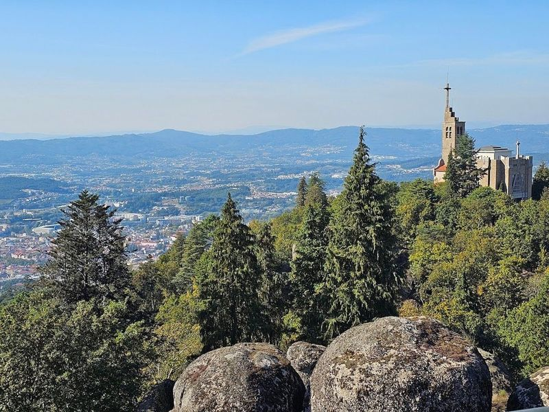
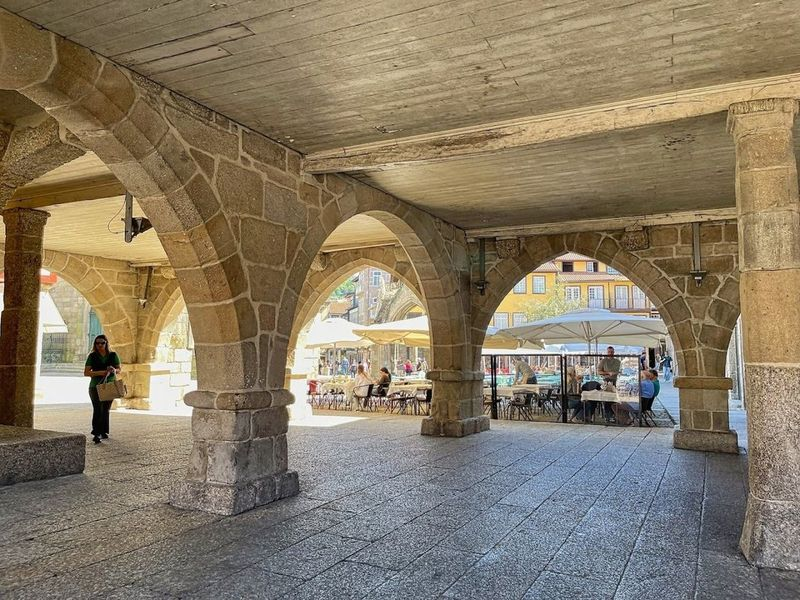
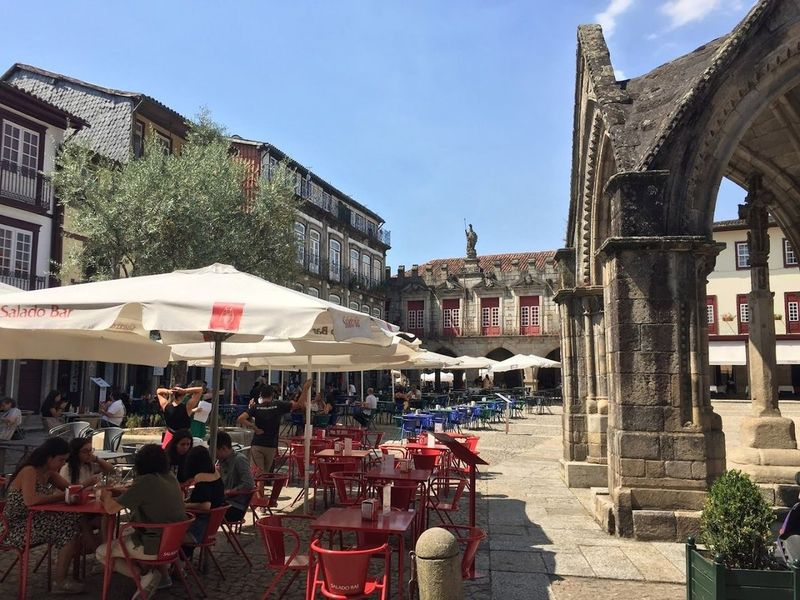
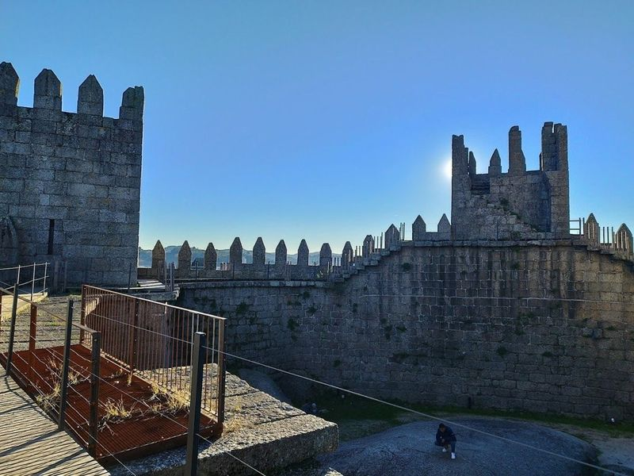
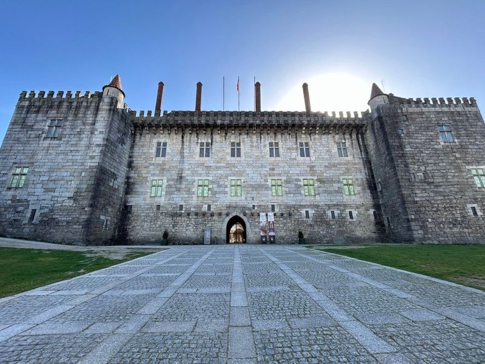
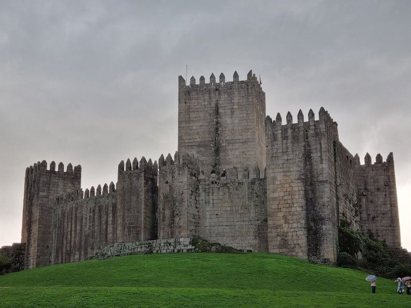
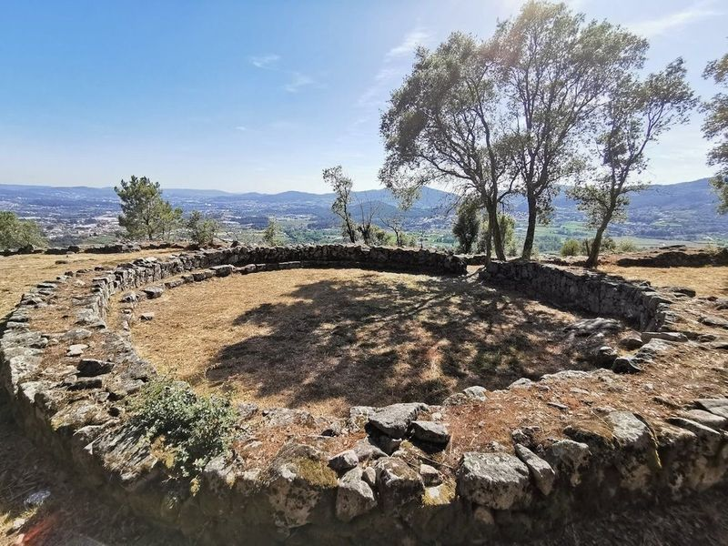
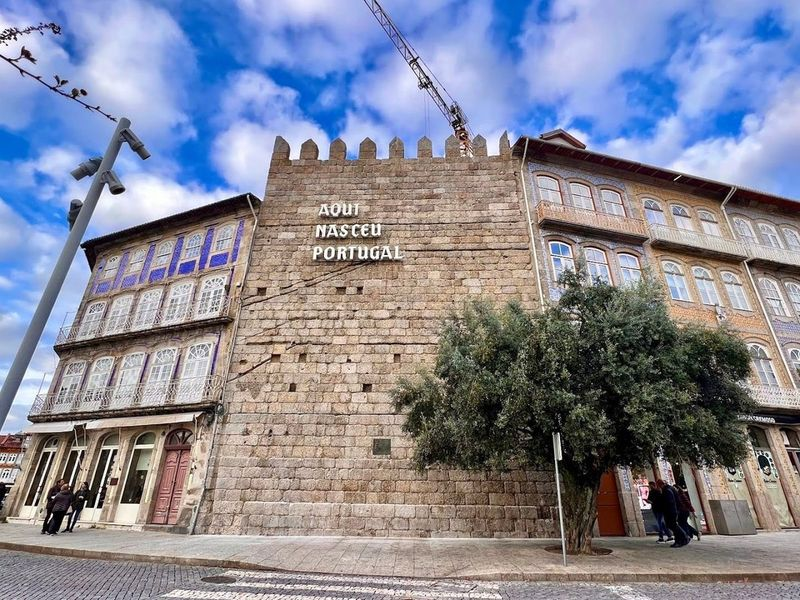
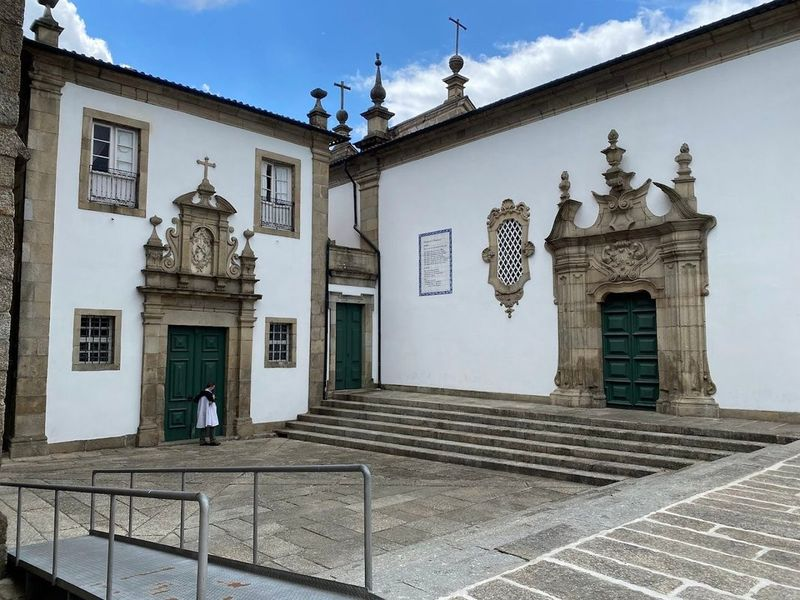
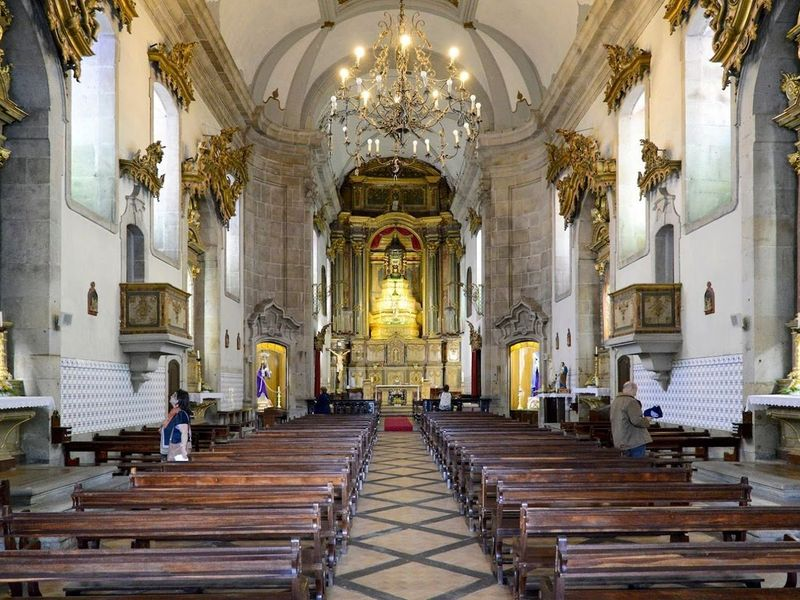

Explore Guimarães
A Brief History
Guimarães is traditionally regarded as the cradle of Portugal because Afonso Henriques was born at its castle and proclaimed king after 1128 in the nearby Sã Mamede field. The ducal palace and Romanesque chapel within the walls illustrate the county of Portucale's break from León. Narrow granite lanes, baroque mansions, and nineteenth-century factories in the lower town show how a court seat evolved into an industrial centre of the Minho without erasing its foundational role in Portuguese statehood.
Attractions Map
Top Sights & Activities

Sanctuary of Penha
The Sanctuary of Penha, inaugurated in 1947, is situated at the highest point of Guimaraes, Monte da Penha. Designed by Jose Marques da Silva, it offers city views and is surrounded by walking trails in a 60-hectare park. The site includes a statue of Pope Pius IX and a viewpoint with panoramic vistas extending to the sea on clear days. This UNESCO World Heritage site also features shops and restaurants near the main parking area.

Guimarães Historical City Centre
Guimarães Historical City Centre is a UNESCO World Heritage site, boasting centuries-old buildings and granitic streets. Largo da Oliveira and Santiago squares are attractions within the city walls. The area is known as the birthplace of Portugal, with architectural styles spanning from the 12th to 19th century. While some buildings are in need of repair, the medieval charm remains intact with stone and timber structures lining narrow pebbled streets.

Padrão do Salado
Located in a medieval square, Padrão do Salado is a Gothic monument with four arches and a cross that commemorates a victorious battle. It was commissioned by King D. Afonso IV in 1342 to honor the Portuguese involvement in the Battle of Salado. The monument stands in Largo da Oliveira, surrounded by historic buildings such as those in Praca de Sao Tiago and Rua de Santa Maria, which retain their medieval architecture.

Guimarães Castle
Guimarães Castle, perched on a hilltop, is a Romanesque fortress believed to be the birthplace of Afonso Henriques. Dating back to the 10th century, it's an landmark in the city and one of Portugal's Seven Wonders. Originally built in wood and mud for protection against Arab attacks, it was later reconstructed in stone. The castle holds historical significance as the birth site of Portugal's first king.

Palace Duques de Bragança
The Palace Duques de Bragança is a medieval residence located above the historic center of Guimaraes, Portugal. Constructed in the 15th century, it boasts distinctive towers and cylindrical chimneys that dominate the city's skyline. Once a barracks, it was restored and transformed into a museum in the mid-20th century. The museum houses period interiors, notable tapestries, porcelain, weapons, and personal belongings of the Duke.

Campo de São Mamede
Campo De Sao Mamede is a spacious esplanade offering a view of the castle and ample parking space, making it convenient for travellers. It's located just a 10-minute walk from the old town, providing an opportunity to capture beautiful photos, especially during sunset. The impressive architecture of the castle and palace makes them worth visiting, with easy access to both attractions.

Citânia de Briteiros
Citânia de Briteiros is an intriguing archaeological site located near Braga, Portugal. It dates back to the Iron Age, with ruins discovered in 1875 and believed to have been inhabited from around 300 BC to 300 AD. The site features over 150 stone huts, with two of them restored to showcase their original appearance.

Aqui Nasceu Portugal
Nestled near Largo do Toural, the "Aqui Nasceu Portugal" sign stands proudly on one of the ancient towers that form part of Guimaraes' historic wall. This charming town is steeped in rich history, being recognized as the birthplace of Afonso Henriques, Portugal's first king.

Church of Saint Francis
The Church of Saint Francis, also known as Igreja de Sao Francisco, is a religious monument located away from the old town center. The 18th-century azulejos that adorn the chancel depict the life of St. Anthony in vivid blue and white panels, adding to the grace of this place. The interior is decorated with gilded wood and features a crypt worth exploring.

Igreja e Oratórios de Nossa Senhora da Consolação e Santos Passos
Located at the end of Largo Republica do Brasil Avenue, the Igreja e Oratórios de Nossa Senhora da Consolação e Santos Passos, also known as San Gualter, is a significant architectural gem in Guimaraes. This 18th-century church boasts a striking baroque and rococo style with two imposing towers that dominate the city's skyline. travellers can admire its ornate interior featuring various altarpieces and the main altar.